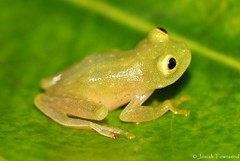
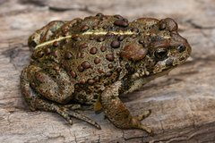

#-1: Ranita de Cristal Norteña
(Hyalinobatrachium fleischmanni)

#-2: Sapo Occidental
(Anaxyrus boreas)

#-3: Sapo de Arroyo
(Anaxyrus californicus)

#-4: Sapo de Espuelas
(Anaxyrus cognatus)

#-5: Sapo de la Meseta
(Anaxyrus compactilis)